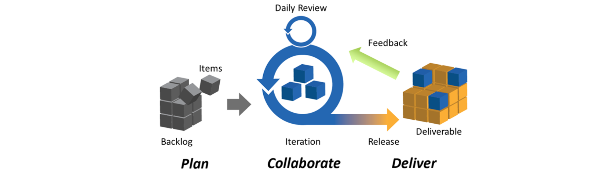

As an intern in the Digital Strategies and Innovation Unit of Harvard Library, I gained familiarity with Agile project management principles by way of full-time engagement on a team of UX professionals, designers, developers, and analysts utilizing a Scrum framework in combination with Jim and Michele McCarthy's Core Protocols for high-performing teams.
This opportunity empowered me to develop my skills in Python programming, metadata curation, and copyright assessment, by developing a pilot workflow for making select Harvard Library digital collections available on Wikimedia Commons, where researchers are more likely to find them. Collaborating with two fellow interns to develop a sustainable, efficient model for how librarians and curators throughout a large research institution can carry out this work was a very rewarding experience.
I also moderated user testing sessions with student participants to gather qualitative and quantitative data on a Harvard Library website under development for supporting remote research.
Additional UX experience included interview protocol development, affinity diagramming, and analysis of lightweight user journey mapping.
This experience also served as an exciting introduction to the world of accessible web design. With two fellow interns, I conducted automatic and manual accessibility reviews of a Scalar website affiliated with Harvard Library, in order to develop recommendations for later presentations to staff in multiple departments across the world's largest academic library.
A marketing project for Harvard Digital Collections also strengthened my understanding of key foundations in design, content strategy, and brand identity. Meetings, correspondence, and conference session attendance with Harvard librarians beyond Digital Strategies and Innovation provided me with valuable exposure to linked data, research data management, library administration, and web archiving.
Please click on the links below to view artifacts and background information on the projects described above, including (from top to bottom): slides from my final presentation with two teammates, a Python code repository, a Wikimedia Commons collection, a summary of prioritized web accessibility recommmendations, and a Wikipedia page on the Scrum framework.
Slides from final presentation
Python code repository for Wikimedia Commons workflow project
Wikimedia Commons collection serving as proof of concept for workflow
Website accessibility review priorities and recommendations
Image courtesy of Planbox via Wikimedia Commons
{kind=link}